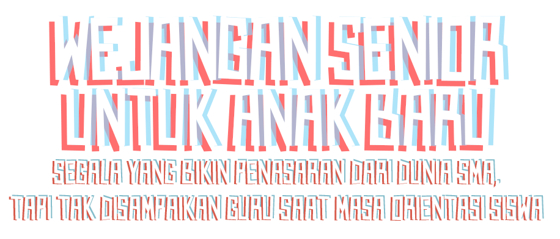
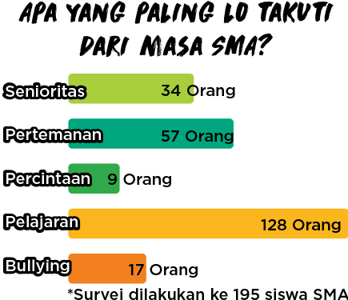

Saat bikin survei di atas, HAI agak waswas karena menduga hal yang paling ditakuti anak SMA itu masih berkisar bullying dan senioritas. Tapi nyatanya yang paling bikin dipikirin adalah pelajaran. Berarti anak SMA sekarang peduli dengan perkembangan akademisnya.
Tapi kabar ini nggak bener-bener baik sih. Ternyata beberapa siswa baru segitu jipernya sama akademis.
“Menurut gue, masa SMA itu seru tapi ribet juga sih. Soalnya sekolah gue katanya bakal banyak pelajarannya. Gue takut nggak bisa ngejar pelajarannya,” kata Naufalino dari SMA Dian Didaktika
Naufal masih belum seberapa dibanding Giulietta Andriannie yang lulus dari SMPK Tirtamarta Pondok Indah. Masa SMA bagi Giulietta adalah masa yang cuma kita habisin dengan belajar.
“Menurut gue, masa SMA itu masa yang harus bener-bener fokus ke pelajaran, karena nilainya sangat krusial buat nanti nentuin kuliah. Masalahnya gue juga nggak pengen belajar non-stop, gue pengen gaul juga,” kata Giulietta
Well, pemikiran kayak gitu nggak ada salahnya, sih, tapi kalau sampai bikin kamu jiper berkepanjangan berati perlu diatasi, tuh.
HAI kasih tahu, nih. Semakin tinggi pohon, bakal makin kenceng angingnya. Pepatah itu pas buat ngegambarin masa SMA, sob! Karena naik tingkat beban akamedik atau pelajarannya makin berat. Tapi, kemampuan kita berpikir dan mengolah pengetahuan juga semakin kuat kan?
Gampang banget untuk setuju. Tapi, kalau bayangan guru-guru killer, PR atau tugas yang ‘beres satu nambah seribu’, buku-buku tebel, karya tulis syarat UN, dan cerita kakak kelas XII yang hidupnya cuma sekolah-bimbel-tidur siswa baru jadi jiper berjamaah. Tuh.
Well, dari 20 kakak-kakak senior yang HAI wawancara, 12 di antaranya bilang pelajaran di SMA itu susah. Gregorius Garth, misalnya, siswa kelas XII jurusan IPA St. John School BSD ini cerita susahnya menghapal rumus Matematika. Belum lagi mata pelajaran Biologi yang hafalannya juga rumit.
“Kalo gue, sih, ngalamin paling susah matematika. Menurut gue rumusnya kebanyakan. Ditambah guru gue itu cuma njiplak buku cetak buat presentasi,” jelas Garth.
Ya namanya juga naik level, bro! yang kita hadapi pasti lebih susah. Tapi, bukan berarti kita mesti nyerah kan? Contoh nih Syahdam Banderas. “(Pelajaran SMA itu) Susah, sih, tapi kalo dibawa hepi jadi biasa aja,” ujar kata siswa kelas XII jurusan IPA SMA Al-Fityan School Tangerang

HALO SISWA BARU SMA,
Gimana, masa pengenalan lingkungan sekolah kemarin? Materi apa saja nih yang kamu dapet dari para guru? Hmm, semoga tetep seru yah dan bukan cuma materi sosialisasi bahayanya tawuran dari pak polisi dan seminar dari para motivator saja yah.
HAI tahu banget, kok, sekarang ini masa orientasi itu lebih banyak dipegang oleh guru dan pejabat sekolah. Keterlibatan senior dibatasi banget karena takut muncul penyimpangan senioritas.
Well, di satu sisi hal itu baik sih. Tapi HAI saranin sih jangan sampe kamu malah jadi menganggap kedekatan dengan senior udah pasti berujung masalah. Salah banget kalau gitu.
Justru, deket dengan senior saat masa orientasi itu bisa bikin kita tahu lebih banyak tentang seluk-beluk dunia SMA. Pak Guru mungkin bisa cerita tentang bahayanya tawuran, tapi kayaknya cuma dari senior saja deh kita bisa tahu tips selamat ketika saat di jalan pulang, ada gerombolan yang iseng nyerang.
Guru BK udah pasti jago, sih, mengarahkan pilihan akademis kita, tapi gimana masalah gebet-menggebet cewek, enak nggak enaknya jadi anak hits di sekolah, hingga budaya di tongkrongan? Informasi dan cerita itu lebih seru kalau kita dapetinnya dari yang baru saja mengalaminya. Ya siapa lagi kalau bukan senior kita.


Karena itu, HAI bikin laporan ini. HAI mengumpulkan sejumlah hal yang biasa diresahkan, ditanyakan hingga ditakuti para anak baru lalu HAI ajak para senior untuk memberikan wejangan tentangnya. Mari duduk rapih, siapkan cemilan bilung, mi goreng double, dan ciki-cikian dan simak ceritanya.